Publications
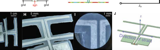 | Pneumatically-Actuated Liquid Metal-Based Frequency Reconfigurable Antenna, Yiwen Song, Aditya Bharambe, Dinesh K Patel, Barbara Zhuo, Mason Zadan, Carmel Majidi and Swarun Kumar, Advanced Science 2026 PAPER WEBSITE |
 | SonicSieve: Bringing Directional Speech Extraction to Smartphones Using Acoustic Microstructures, Kuang Yuan, Yifeng Wang, Xiyuxing Zhang, Chengyi Shen, Swarun Kumar, and Justin Chan, CHI 2026 WEBSITE |
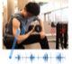 | GigaFlex: Contactless Monitoring of Muscle Vibrations During Exercise with a Chaos-Inspired Radar, Jiangyifei Zhu, Yuzhe Wang, Tao Qiang, Vu Phan, Zhixiong Li, Evy Meinders, Eni Halilaj, Justin Chan and Swarun Kumar, SenSys 2026 WEBSITE |
 | Surface Material and Roughness Sensing using mmWave via Surface Scattering and Ambient Vibrations, Yawen Liu, Bert Shan and Swarun Kumar, SenSys 2026 WEBSITE |
 | TranQuiL: Long Range Detection and Localization of RFI in Radio Quiet Zones, Atul Bansal, Mohamed Ibrahim, Kuang Yuan, Yiwen Song, Swarun Kumar and Bob Iannucci, Radio Science 2026 PAPER WEBSITE |
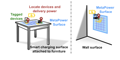 | Towards Smart Wireless Power Transfer Through a Localizing and Beam-Focusing Magnetic Metasurface, Yawen Liu and Swarun Kumar, HotMobile 2026 WEBSITE |
 | RFBridge: Ultra Wideband Reconfigurable Metamaterial Surface Enabling Frequency Conversion, Yawen Liu, Shivang Aggarwal, Mohamed Ibrahim, Puneet Sharma, and Swarun Kumar, HotMobile 2025 PAPER WEBSITE |
 | Can we make FCC Experts out of LLMs?, Atul Bansal, Veronica Muriga, Jason Li, Lucy Duan and Swarun Kumar, HotMobile 2025 PAPER WEBSITE |
 | WindDancer: Understanding Acoustic Sensing under Ambient Airflow, Kuang Yuan, Dong Li, Hao Zhou, Zhehao Li, Lili Qiu, Swarun Kumar and Jie Xiong, IMWUT 2025 PAPER WEBSITE |
 | Shape-programming Robotic Reflectors for Wireless Networks, Yawen Liu, Akarsh Prabhakara, Jiangyifei Zhu, Shenyi Qiao, Swarun Kumar, ICRA 2025 PAPER WEBSITE |
 | Frequency-selective actuation of liquid crystalline elastomer actuators with radio-frequency, Yiwen Song, Zefang Li, Mason Zadan, Jingxian Wang, Swarun Kumar, Carmel Majidi, Nature Communications 2025 PAPER WEBSITE |
 | DeWinder: Single-Channel Wind Noise Reduction using Ultrasound Sensing, Kuang Yuan, Shuo Han, Swarun Kumar and Bhiksha Raj, InterSpeech 2024 PAPER WEBSITE |
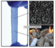 | Thermo-Mechanically Stable, Liquid Metal Embedded Soft Materials for High-Temperature Applications, Robert Herbert, Piotr Mocny, Yuqi Zhao, Ting-Chih Lin, Junbo Zhang, Michael Vinciguerra, Sunny Surprenant, Wui Yarn Daphne Chan, Swarun Kumar, Michael R. Bockstaller, Krzysztof Matyjaszewski, Carmel Majidi, Advanced Functional Materials 2024 PAPER WEBSITE |
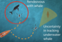 | Reinforcement learning-based framework for whale rendezvous via autonomous sensing robots, Nishant Mehrotra, Divyanshu Pandey, Ashutosh Sabharwal, Akarsh Prabhakara, Yawen Liu and Swarun Kumar, Science Robotics 2024 PAPER WEBSITE |
 | Hydra: Exploiting Multi-Bounce Scattering for Beyond-Field-of-View mmWave Radar, Nishant Mehrotra, Divyanshu Pandey, Ashutosh Sabharwal, Akarsh Prabhakara, Yawen Liu and Swarun Kumar, MobiCom 2024 PAPER WEBSITE |
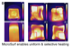 | Guiding Energy Distribution inside Microwave Oven, Yiwen Song, Swarun Kumar, Hao Pan, Longyuan Ge, Yi-Chao Chen, and Lili Qiu, MobiCom 2024 PAPER WEBSITE |
 | ToMoBrush: Exploring Dental Health Sensing using a Sonic Toothbrush, Kuang Yuan, Mohamed Ibrahim, Yiwen Song, Guoxiang Deng, Robert A. Nerone, Suvendra Vijayan, Akshay Gadre, and Swarun Kumar, UbiComp 2024 PAPER WEBSITE |
 | A Roadmap for the Democratization of Space-Based Communications, Veronica Muriga, Swarun Kumar, Akshitha Sriraman and Assane Gueye, HotNets 2024 PAPER WEBSITE |
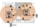 | Towards Ubiquitous IoT through Long Range Wireless Energy Harvesting, Mohamed Ibrahim, Atul Bansal, Kuang Yuan, Junbo Zhang, and Swarun Kumar, MobiHoc 2024 PAPER WEBSITE |
 | TranQuiL: Long Range Detection and Localization of RFI in Radio Quiet Zones, Atul Bansal, Mohamed Ibrahim, Kuang Yuan, Yiwen Song, Swarun Kumar and Bob Iannucci, RFI (Oral) 2024 WEBSITE |
 | Adapting LoRa Ground Stations for Low-latency Imaging and Inference from LoRa-enabled CubeSats, Akshay Gadre, Zachary Machester, and Swarun Kumar, ACM ToSN 2024 PAPER WEBSITE |
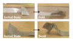 | Wireless Actuation for Soft Electronics-free Robots, Jingxian Wang, Yiwen Song, Mason Zadan, Yuyi Shen, Vanessa Chen, Carmel Majidi and Swarun Kumar, MobiCom 2023 PAPER WEBSITE |
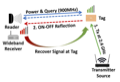 | Battery-free Wideband Spectrum Mapping using Commodity RFID Tags, Mohamed Ibrahim, Atul Bansal, Kuang Yuan, Swarun Kumar and Peter Steenkiste, MobiCom 2023 PAPER WEBSITE |
 | Platypus: Sub-mm Micro-Displacement Sensing with Passive Millimeter-wave Tags As Phase Carriers, Thomas Horton King, Jizheng He, Chun-Kai (Sean) Yao, Akarsh Prabhakara, Mohamad Alipour, Swarun Kumar, Anthony Rowe and Elahe Soltanaghai, IPSN 2023 PAPER WEBSITE |
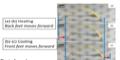 | Navigating Soft Robots through Wireless Heating, Yiwen Song, Mason Zadan, Kushaan Misra, Zefang Li, Jingxian Wang, Carmel Majidi and Swarun Kumar, ICRA 2023 PAPER WEBSITE |
 | High Resolution Point Clouds from mmWave Radar, Akarsh Prabhakara, Tao Jin, Arnav Das, Gantavya Bhatt, Lilly Kumari, Elahe Soltanaghai, Jeff Bilmes, Swarun Kumar and Anthony Rowe, ICRA 2023 PAPER WEBSITE |
 | The Interplay of Clustering and Evolution in the Emergence of Epidemics on Networks, Mansi Sood, Rashad Eletreby, Swarun Kumar, Chai Wah Wu, Osman Yagan, ICC 2023 PAPER WEBSITE |
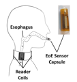 | NFCapsule: An Ingestible Sensor Pill for Eosinophilic Esophagitis Detection Based on Near-field Coupling, Junbo Zhang, Gaurav Balakrishnan, Sruti Srinidhi, Arnav Bhat, Swarun Kumar and Christopher Bettinger, SenSys 2022 PAPER WEBSITE |
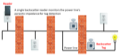 | PLatter: On the Feasibility of Building-scale Power Line Backscatter, Junbo Zhang, Elahe Soltanaghaei, Artur Balanuta, Reese Grimsley, Swarun Kumar and Anthony Rowe, NSDI 2022 PAPER WEBSITE |
 | Exploring mmWave Radar and Camera Fusion for High-Resolution and Long-Range Depth Imaging, Akarsh Prabhakara (Co-Primary), Diana Zhang (Co-Primary), Chao Li, Sirajum Munir, Aswin Sankaranarayanan, Anthony Rowe and Swarun Kumar, IROS 2022 PAPER SLIDES WEBSITE |
 | Toolbox Release: A WiFi-Based Relative Bearing Sensor for Robotics, Ninad Jadhav, Weiying Wang, Diana Zhang, Swarun Kumar and Stephanie Gil, IROS 2022 PAPER WEBSITE |
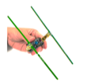 | Ultra Low-Latency Backscatter for Fast-moving Location Tracking, Jingxian Wang, Vaishnavi Ranganathan, Jonathan Lester and Swarun Kumar, UbiComp 2022 PAPER WEBSITE |
 | SelfieStick: Towards Earth Imaging from a Low-Cost Ground Module Using LEO Satellites, Vaibhav Singh, Osman Yagan and Swarun Kumar, IPSN 2022 PAPER WEBSITE |
 | MiLTOn: Sensing Product Integrity without Opening the Box using Non-Invasive Acoustic Vibrometry, Akshay Gadre, Deepak Vasisht, Nikunj Raghuvanshi, Bodhi Priyantha, Manikanta Kotaru, Swarun Kumar and Ranveer Chandra , IPSN 2022 PAPER WEBSITE |
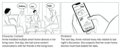 | Exploring the Needs of Users for Supporting Privacy-protective Behavior in Smart Homes, Haojian Jin, Boyuan Guo, Rituparna Roychoudhury, Yaxing Yao, Swarun Kumar, Yuvraj Agarwal and Jason Hong, CHI 2022 PAPER WEBSITE |
 | Lean Privacy Review: Collecting Users' Privacy Concerns of Data Practices at a Low Cost, Haojian Jin, Hong Shen, Mayank Jain, Swarun Kumar, and Jason Hong, TOCHI 2021 PAPER WEBSITE |
 | TagFi: Locating Ultra-Low Power WiFi Tags Using Unmodified WiFi Infrastructure, Elahe Soltanaghaei, Adwait Dongare, Akarsh Prabhakara, Swarun Kumar, Anthony Rowe and Kamin Whitehouse, UbiComp 2021 PAPER WEBSITE |
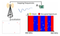 | OwLL: Accurate LoRa Localization using the TV Whitespaces, Atul Bansal, Akshay Gadre, Vaibhav Singh, Anthony Rowe, Bob Iannucci and Swarun Kumar, IPSN 2021 PAPER WEBSITE |
 | Locating Everyday Objects using NFC Textiles, Jingxian Wang (Co-Primary), Junbo Zhang (Co-Primary), Ke Li, Chengfeng Pan, Carmel Majidi and Swarun Kumar, IPSN 2021 (Best Paper Award) PAPER WEBSITE |
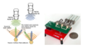 | Millimetro: mmWave Retro-Reflective Tags for Accurate, Long Range Localization, Elahe Soltanaghaei (Co-Primary), Akarsh Prabhakara (Co-Primary), Artur Balanuta (Co-Primary), Matthew Anderson, Jan M. Rabaey, Swarun Kumar and Anthony Rowe, MobiCom 2021 PAPER WEBSITE |
 | A Community-Driven Approach to Democratize Access to Satellite Ground Stations, Vaibhav Singh, Akarsh Prabhakara, Diana Zhang, Osman Yagan and Swarun Kumar, MobiCom 2021 PAPER WEBSITE |
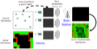 | Quick (and Dirty) Aggregate Queries on Low-Power WANs, Akshay Gadre, Fan Yi, Anthony Rowe, Bob Iannucci and Swarun Kumar, IPSN 2020 (Best Paper Award) PAPER WEBSITE |
 | Full Duplex Radios: Are we there yet?, Vaibhav Singh (Co-Primary), Akshay Gadre (Co-Primary) and Swarun Kumar, HotNets 2020 PAPER WEBSITE |
 | Cross Technology Distributed MIMO for Low Power IoT, Revathy Narayanan, Swarun Kumar and C. Siva Ram Murthy, IEEE Transactions on Mobile Computing 2020 PAPER WEBSITE |
 | Joltik: Enabling Energy-Efficient "Future-Proof" Analytics on Low-Power Wide-Area Networks, Mingran Yang, Junbo Zhang, Akshay Gadre, Zaoxing Liu, Swarun Kumar and Vyas Sekar, MobiCom 2020 PAPER WEBSITE |
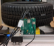 | Osprey: A mmWave Approach to Tire Wear Sensing, Akarsh Prabhakara, Vaibhav Singh, Swarun Kumar and Anthony Rowe, MobiSys 2020 (Best Paper Honorable Mention) PAPER SLIDES WEBSITE |
 | A Cloud-Optimized Link Layer for Low-Power Wide-Area Networks, Artur Balanuta, Nuno Pereira, Swarun Kumar and Anthony Rowe, MobiSys 2020 PAPER WEBSITE |
 | Evolutionary Adaptations on Clustered Contact Networks, Rashad Eletreby, Yong Zhuang, Swarun Kumar and Osman Yagan, NetSci 2020 PAPER WEBSITE |
 | Osprey Demo: A mmWave Approach to Tire Wear Sensing, Akarsh Prabhakara, Vaibhav Singh, Swarun Kumar and Anthony Rowe, MobiSys 2020 PAPER WEBSITE |
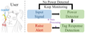 | Poster - NoFaceContact: Stop Touching Your Face with NFC, Junbo Zhang and Swarun Kumar, MobiSys 2020 PAPER WEBSITE |
 | Poster: Does Ambient RF Energy Suffice to Power Battery-free IoT?, Atul Bansal, Swarun Kumar and Bob Iannucci, MobiSys 2020 PAPER WEBSITE |
| Quick (and Dirty) Aggregate Queries on Low-Power WANs, Akshay Gadre, Fan Yi, Anthony Rowe, Bob Iannucci and Swarun Kumar, IPSN 2020 (Best Paper Award) PAPER WEBSITE | |
 | Millimeter-Wave Full Duplex Radios, Vaibhav Singh, Susnata Mondal, Akshay Gadre, Milind Srivastava, Jeyanandh Paramesh and Swarun Kumar, MobiCom 2020 PAPER SLIDES WEBSITE |
 | Frequency Configuration for Low-Power Wide-Area Networks in a Heartbeat, Akshay Gadre, Revathy Narayanan, Anh Luong, Swarun Kumar, Anthony Rowe and Bob Iannucci, NSDI 2020 PAPER WEBSITE |
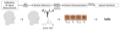 | RFID Tattoo: A Wireless Platform for Speech Recognition , Jingxian Wang, Chengfeng Pan, Haojian Jin, Vaibhav Singh, Yash Jain, Jason Hong, Carmel Majidi and Swarun Kumar, UbiComp 2020 (Best Wearables Long Paper) PAPER WEBSITE |
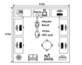 | You foot the bill! Attacking NFC with passive relays, Yuyi Sun, Swarun Kumar, Shibo He, Jiming Chen and Zhiguo Shi, IEEE IoT Journal 2020 PAPER WEBSITE |
 | Silver-Coated PDMS Beads for Soft, Stretchable, and Thermally Stable Conductive Elastomer Composites , Chengfeng Pan, Yun Sik Ohm, Jingxian Wang, Michael J. Ford, Kitty Kumar, Swarun Kumar, and Carmel Majidi, ACS applied materials and interfaces 2019 PAPER |
 | Sozu: Self-Powered Radio Tags for Building-Scale Activity Sensing , Yang Zhang, Yasha Iravantchi, Haojian Jin, Swarun Kumar, and Chris Harrison, UIST 2019 PAPER WEBSITE |
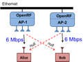 | Perspective: eliminating channel feedback in next generation cellular networks , Deepak Vasisht, Swarun Kumar, Hariharan Rahul and Dina Katabi, ACM SIGCOMM CCR 2019 PAPER |
 | Software Defined Cooking using a Microwave Oven , Haojian Jin, Jingxian Wang, Swarun Kumar and Jason Hong, MobiCom 2019 (ACM GetMobile Research Hightlight) PAPER SLIDES WEBSITE |
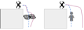 | On the Feasibility of Wi-Fi Based Material Sensing , Diana Zhang, Jingxian Wang, Junsu Jang, Junbo Zhang, Swarun Kumar, MobiCom 2019 PAPER SLIDES WEBSITE |
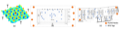 | Pushing the Range Limits of Commercial Passive RFIDs , Jingxian Wang, Junbo Zhang, Rajarshi Saha, Haojian Jin, Swarun Kumar, NSDI 2019 PAPER WEBSITE |
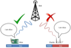 | Revisiting Software Defined Radios in the IoT Era , Revathy Narayanan, Swarun Kumar, HotNets 2018 PAPER |
 | Poster: Maintaining UAV Stability using Low-Power WANs , Akshay Gadre, Revathy Narayanan, Swarun Kumar, MobiCom - Posters 2018 PAPER |
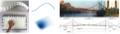 | WiSh: Towards a Wireless Shape-aware World , Haojian Jin, Jingxian Wang, Zhijian Yang, Swarun Kumar, Jason Hong, MobiSys 2018 PAPER WEBSITE |
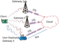 | Charm: Exploiting Geographical Diversity Through Coherent Combining in Low-Power Wide-Area Networks , Adwait Dongare, Revathy Narayanan, Akshay Gadre, Artur Balanuta, Anh Luong, Swarun Kumar, Bob Iannucci, Anthony Rowe, IPSN 2018 (Best Paper Award) PAPER WEBSITE |
 | A Deep Learning Approach to IoT Authentication , Rajshekhar Das, Akshay Gadre, Shanghang Zhang, Swarun Kumar and Jose Moura, ICC 2018 PAPER WEBSITE |
 | Towards Wearable Everyday Body-Frame Tracking , Haojian Jin, Zhijian Yang, Swarun Kumar, and Jason Hong, UbiComp 2018 (Best Demo Honorable Mention) PAPER SLIDES WEBSITE |
 | Empowering Low-Power Wide Area Networks in Urban Settings , Rashad Eletreby, Diana Zhang, Swarun Kumar, and Osman Yagan, SIGCOMM 2017 PAPER SLIDES WEBSITE |
 | Eliminating Channel Feedback in Next-Generation Cellular Networks , Deepak Vasisht, Swarun Kumar, Hariharan Rahul and Dina Katabi, SIGCOMM 2016 (Best Paper Award, GetMobile Research Highlight) PAPER |
 | Decimeter-Level Localization with a Single WiFi , Access Point, Deepak Vasisht, Swarun Kumar and Dina Katabi, NSDI 2016 PAPER |
 | piStream: Physical Layer Informed Adaptive Video Streaming Over LTE, Xiufeng Xie, Xinyu Zhang, Swarun Kumar, and Li Erran Li, MobiCom 2015 (ACM GetMobile Research Hightlight) PAPER |
 | Guaranteeing Spoof-Resilient Multi-Robot Networks, Stephanie Gil (Co-primary), Swarun Kumar (Co-primary), Mark Mazumder, Dina Katabi and Daniela Rus, RSS 2015 PAPER |
 | Adaptive Communication in Multi-Robot Systems Using Directionality of Signal Strength, Stephanie Gil, Swarun Kumar, Dina Katabi and Daniela Rus, 2015 PAPER |
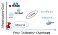 | Accurate Indoor Localization with Zero Startup Cost, Swarun Kumar, Stephanie Gil, Dina Katabi and Daniela Rus, ACM MOBICOM 2014 (Best Presentation Runner-up) PAPER WEBSITE |
 | LTE Radio Analytics Made Easy and Accessible, Ezzeldin Hamed, Dina Katabi, and Li Erran Li, ACM SIGCOMM 2014 PAPER WEBSITE |
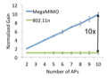 | JMB: Scaling Wireless Capacity with User Demands, Hariharan Rahul, Swarun Kumar, and Dina Katabi, 2014 PAPER |
 | Adaptive Communication in Multi-Robot Systems Using Directionality of Signal Strength, Stephanie Gil, Swarun Kumar, Dina Katabi and Daniela Rus, International Symposium on Robotics Research (ISRR) 2013 PAPER WEBSITE |
 | Bringing Cross-Layer MIMO to Today's Wireless LANs, Swarun Kumar, Diego Cifuentes, Shyamnath Gollakota, and Dina Katabi, ACM SIGCOMM 2013 PAPER SLIDES WEBSITE |
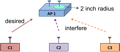 | Interference Alignment by Motion, Fadel Adib (Co-primary), Swarun Kumar (Co-primary), Omid Aryan, Shyamnath Gollakota, and Dina Katabi, ACM MOBICOM 2013 PAPER SLIDES WEBSITE |
 | CarSpeak: A Content-Centric Network for Autonomous Driving, Swarun Kumar, Lixin Shi, Stephanie Gil, Nabeel Ahmed, Dina Katabi, and Daniela Rus, ACM SIGCOMM 2012 PAPER SLIDES WEBSITE |
 | MegaMIMO: Scaling Wireless Capacity with User Demands, Hariharan Rahul, Swarun Kumar, and Dina Katabi, ACM SIGCOMM 2012 (CACM Research Highlight) PAPER WEBSITE |
 | A Cloud-Assisted Design for Autonomous Driving, Swarun Kumar, Shyamnath Gollakota, Dina Katabi, MCC Workshop (SIGCOMM) 2012 PAPER |